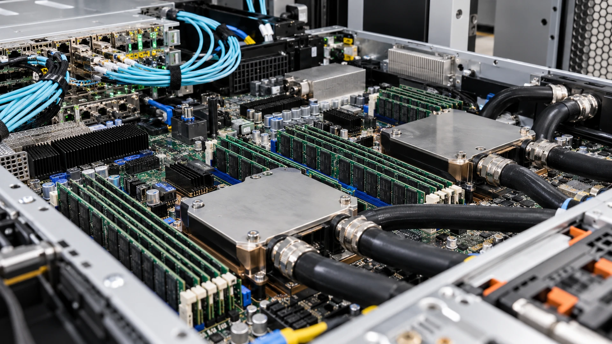

AI Computing Capacity Depends on Memory, Networks and Cooling
A faster processor cannot fix every system bottleneck. The useful measure is reliable workload output at a given total cost.
TTN Research Desk · Published Oct 11, 2026 · Updated Oct 12, 2026

An accelerator can spend time waiting for data instead of processing it. Buying more processors may therefore add little useful output if memory, networking or storage remains the limiting part of the system.
AI workloads move information between several components. Training across machines can depend on communication, while serving a model can face memory and latency constraints. Different workloads stress different parts, so one peak-performance specification cannot represent every deployment.
Power delivery and cooling constrain how much equipment can operate reliably at a site. Higher compute density can require investment in electrical and thermal systems, and an interruption can affect paid service even when the processors themselves function correctly.
A buyer needs a system-level comparison: accepted workload output, response time, reliability and operating expense, including energy and support. A lower hardware purchase price may be offset by inefficient utilization or a more expensive site.
Suppliers have distinct exposures. Strong processor demand can benefit a memory or network vendor while creating delivery constraints or price pressure elsewhere. Order growth should be read with capacity, customer concentration and the ability to deliver the required component on time.
The financial test is the cost of useful computing work over the system's life. Chip performance matters, but the return belongs to the complete installation and the service customers can obtain from it.
Sources and methodology (2)
Primary references for the definitions, methods and risks discussed above. Examples labeled hypothetical or illustrative are not current market quotations.
TTN analysis for informational purposes. This article is not investment, tax or legal advice.